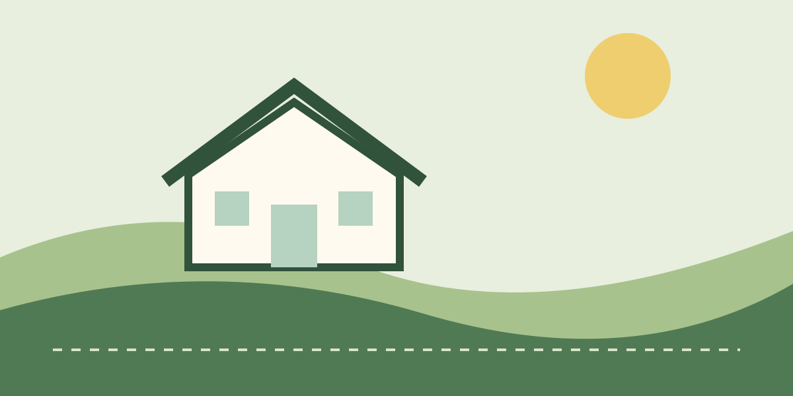

GreenLineOutdoor care
Room to
grow.
GreenLine Lawn Care
A neighborhood lawn-care concept shaped by confident greens, Manrope typography, a custom CSS landscape, considered photography, and subtle motion that respects reduced-motion settings.

 Explore the demo
Explore the demo